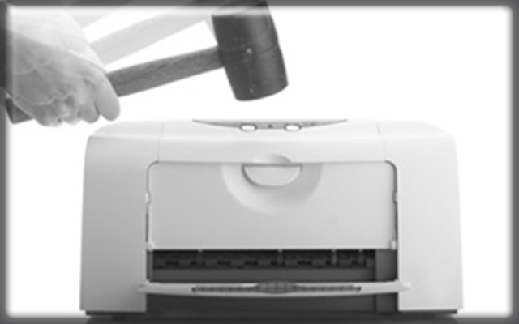

Các vấn đề thường gặp trong in ấn và cách khắc phục
Máy in đã trở thành một thiết bị chính có mặt trong các văn phòng và phòng nghiên cứu trên khắp thế giới, và như mọi công nghệ khác, nó có thể có một số trở ngại về kỹ thuật. Tuy nhiên, phần lớn các vấn đề liên quan đến máy in có thể dễ dàng khắc phục. Dưới đây là một số trong những vấn đề phổ biến nhất có thể xảy ra với máy in và một số cách để giải quyết chúng.Những lỗi phổ biến và hay gặp nhất ở máy in
Máy in không hoạt động
Giải pháp rõ ràng nhất cho vấn đề này là đảm bảo rằng máy in đã được bật lên và được kết nối đúng với máy tính của bạn. Cũng cần lưu ý rằng máy in mà bạn định in phải được cài đặt vào máy tính bạn đang sử dụng thì máy in mới làm việc.

Nếu bạn không chắc chắn rằng máy tính của bạn đã cài đặt driver chính xác, thì bạn có thể kiểm tra bằng cách mở các thiết bị và thư mục in trên bảng điều khiển. Bạn sẽ thấy một danh sách các máy in sẵn có cho bạn, nếu máy in bạn cần không có trong danh sách thì hãy kiểm tra xem nó có được kết nối với đúng mạng không. Nếu bạn không có trình điều khiển cần thiết, thì bạn có thể tải từ trang web của nhà sản xuất. Ngoài ra, với sự xuất hiện gần đây của Windows 8, nhiều chủ sở hữu máy in đang phát hiện ra rằng họ phải cập nhật các ổ đĩa in cùng với hệ điều hành của họ để giữ cho máy in hoạt động.
Tốc độ in của máy quá chậm
Kinh nghiệm cho thấy, máy in laser màu có tốc độ in nhanh hơn máy in phun và nếu văn phòng của bạn vẫn dựa vào một sản phẩm in phun lỗi thời thì cũng nên cân nhắc đến khả năng thay thế. Tuy nhiên, có vài cách giải quyết có thể giúp bạn tăng tốc độ in lên một chút.
Cách tốt nhất để tăng tốc độ in là điều chỉnh cài đặt chất lượng; mặc dù bạn có thể phải chấp nhận độ phân giải thấp hơn, bạn có thể nhận thấy máy in nhanh hơn. Vì vậy, nếu bạn đang in tài liệu để sử dụng tại nhà, bạn có thể chuyển máy in của bạn sang chế độ nháp để tốc độ in nhanh hơn một chút.
Máy in tốn quá nhiều mực
Khi nói đến in ấn, một số máy in tiết kiệm mực hơn so với những cái khác tuy nhiên một số khác thì không. Chúng tôi có thể tư vấn cho bạn về chi phí hoạt động với từng máy in, nhưng có một vài cách để bạn có thể đảm bảo rằng bạn tận dụng tối đa hộp mực.
Thông thường, các máy in đời mới có nhiều tính kinh tế hơn khi nói đến mực in, nhưng phần lớn các máy in sẽ có chế độ tiết kiệm mực, nhưng như đã đề cập ở trên, đôi khi điều này có thể dẫn đến vấn đề chi phí in ấn cần giải quyết. Máy in phun cũng có chế độ nháp sử dụng mực ít hơn và có thể được sử dụng khi bạn cần những bản in tài liệu sử dụng trong văn phòng không yêu cầu cao về chất lượng.
Có nhiều cách cảnh báo hộp mực sắp hết tùy theo từng nhà sản xuất, nhưng không nên tin hoàn toàn vào điều đó. Bạn thường có thể tiếp tục in cho đến khi chúng hết sạch. Ngoài ra, phương pháp hiệu quả nhất để tiết kiệm hộp mực và mực in nhìn chung là bạn nên cân nhắc khi muốn in một tập tài liệu không cần thiết cho một buổi họp ngắn chừng 5 phút hay không?
Hiện tượng kẹt giấy ở máy in
Khi bạn sở hữu một máy in, thỉnh thoảng bạn sẽ không tránh khỏi phải đối mặt với những tờ giấy nham nhở. Mặc dù không phổ biến, nhưng nếu bạn gặp chúng thường xuyên thì có một số mẹo và thủ thuật cần ghi nhớ.
Thứ nhất, không lắp quá đầy giấy vào khay và luôn đảm bảo rằng nó thẳng hàng ngay ngắn. Phần lớn các khay giấy được trang bị một thanh trượt để đảm bảo rằng giấy được giữ chặt và được đưa gọn gàng vào máy in; nếu thanh trượt không đúng vị trí nó có thể gây ùn tắc.
Mặc dù vậy, bạn không nên kết hợp các loại giấy mà bạn có cho vào máy in. Nếu bạn đang sử dụng bất cứ thứ gì khác ngoài giấy chuẩn, giấy thường, hãy kiểm tra cẩn thận các thông số kỹ thuật của máy in. Đồng thời, có thể bạn cần mở máy in của mình để đảm bảo không có phế liệu giấy hoặc vật lạ cản trở các hoạt động bên trong máy.
Để tìm hiểu thêm về phạm vi của máy in hoặc để thảo luận mô hình nào có thể là tốt nhất cho bạn hoặc doanh nghiệp của bạn, vui lòng tham khảo trang web của chúng tôi tại: napmucnhanh24h.com hoặc gọi cho chúng tôi theo số 0908 327 123
Không tự khắc phục được? Mực In Trường Phát nhận sửa máy in tận nơi TP.HCM 24/7 – kỹ thuật có mặt trong ngày, báo giá trước khi sửa, bảo hành 1 tháng. Hotline 0908.327.123 (Zalo). → Xem dịch vụ sửa máy in tận nơi.
Cần nạp mực hoặc sửa máy in tận nơi? Mực In Trường Phát có mặt trong 30 phút tại TP.HCM — in test trước khi tính tiền, bảo hành 1 tháng.
0908.327.123 · 0819.007.394 (Zalo cả 2 số)